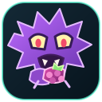

BIOMETRIC INDEX / NATIONAL DEX
Banco de datos
Conectando con PokéAPI…
Cargando especies…
Cargando la Pokédex…

POKEMORAInterfaz táctica de exploración Pokémon. Analiza especies, tipos y datos de campo en una base de datos viva.
Iniciar escaneo ↓Cargando especies…